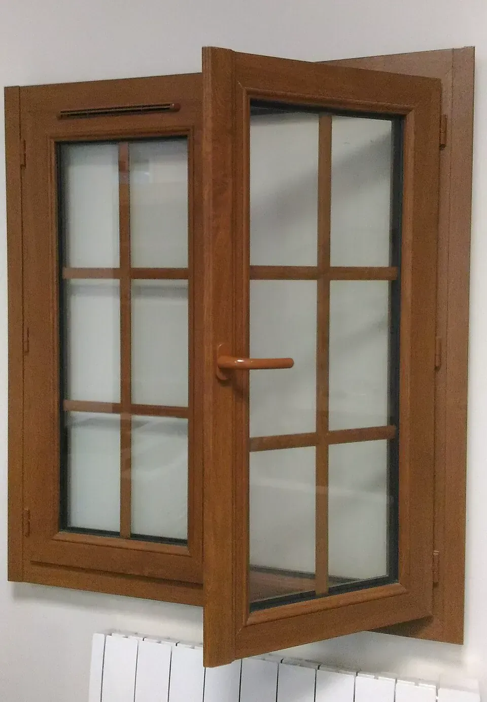
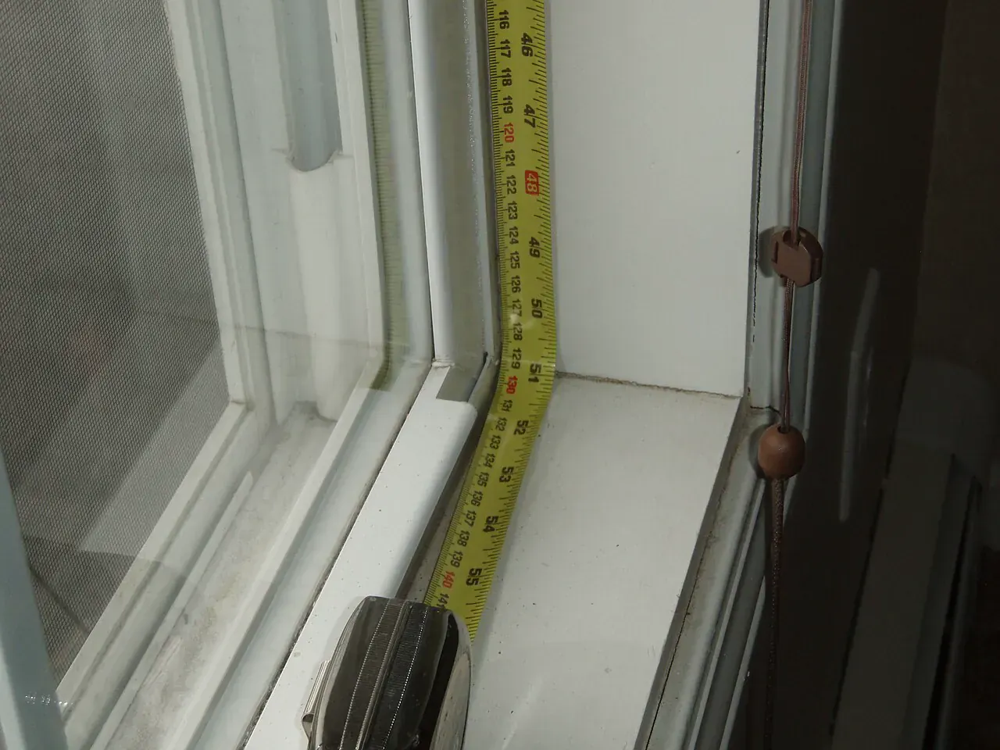
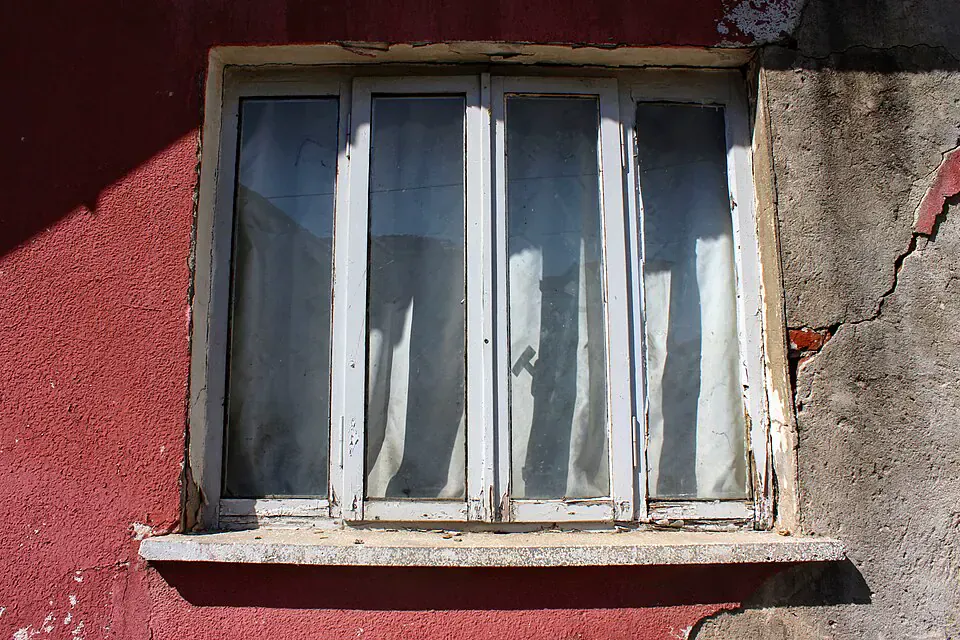
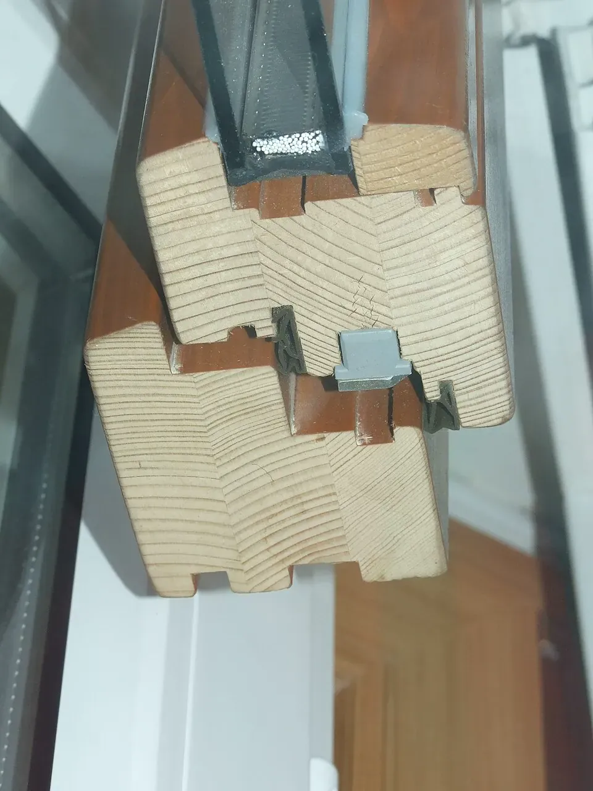
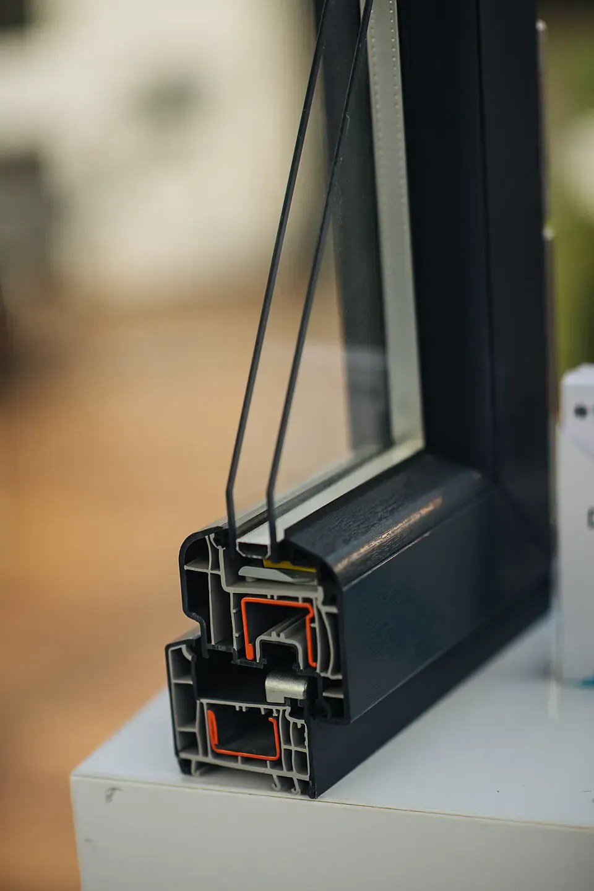

PVC
Bianco o effetto legno. Isola bene e non richiede manutenzione.
Pagina dimostrativa: “Ferlano Serramenti” è un’azienda di fantasia.
Verona e provincia · Sopralluogo gratuito
Basta spifferi, condensa e rumore dalla strada. Prendiamo noi le misure, ti portiamo i campioni e ti lasciamo un prezzo chiaro, voce per voce.

Gratuitoil sopralluogo, in tutta la provincia
48 oreper avere il preventivo scritto
Inclusosmontaggio e smaltimento
10 annidi garanzia sulla posa (da confermare)
Sono i segni di finestre che non isolano più: il caldo esce d’inverno ed entra d’estate, e lo paghi in bolletta.

Ti portiamo i campioni a casa: li tocchi, li confronti e decidi con calma.

Bianco o effetto legno. Isola bene e non richiede manutenzione.

Il calore del legno dentro casa, l’alluminio fuori contro pioggia e sole.

A taglio termico, con profili sottili per vetrate grandi e porte finestre.
Il sopralluogo non ti impegna: decidi dopo aver letto il preventivo.
Un minuto. Ti richiamiamo entro un giorno lavorativo per fissare il giorno.
Misuriamo ogni apertura, ti mostriamo i campioni e in 48 ore hai il prezzo scritto.
Ogni finestra si cambia in giornata, una stanza alla volta. Le vecchie le portiamo via noi.
Qui vanno 3 recensioni Google vere del cliente, con nome e paese, e il voto medio con il numero di recensioni. Non si inventano.
Sì, la sostituzione degli infissi rientra nei bonus per la casa. La percentuale dipende dall’anno e dalla casa: nel preventivo indichiamo i documenti, la conferma te la dà il commercialista.
Di solito no: il nuovo telaio va nello stesso foro. Se serve un lavoro di muratura, è scritto prima nel preventivo.
Niente, in tutta la provincia di Verona. E non ti impegna ad accettare il preventivo.
Per cambiare colore o forma spesso serve l’assenso del condominio. Al sopralluogo ti diciamo cosa chiedere.
Un minuto per il modulo, preventivo scritto in 48 ore.